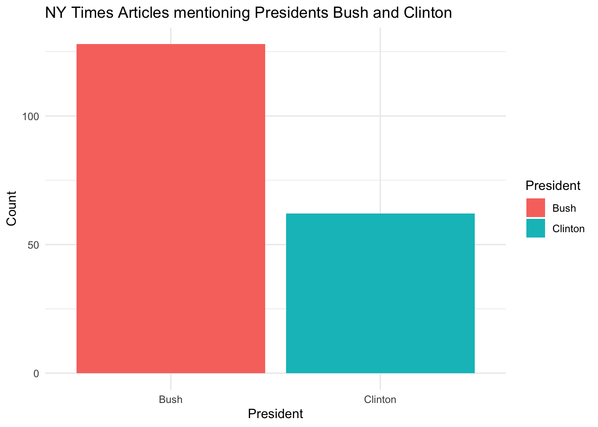
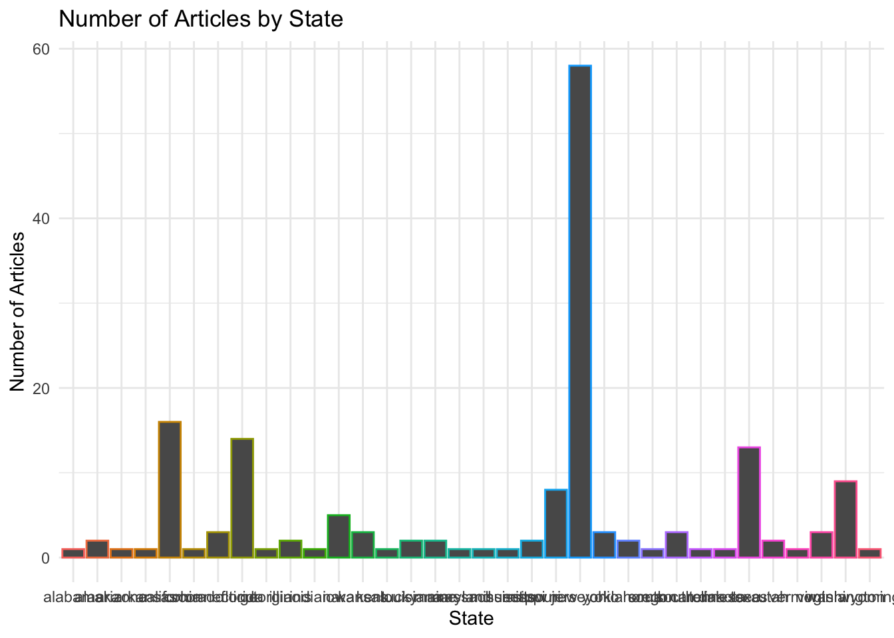

── Conflicts ────────────────────────────────────────── tidyverse_conflicts() ──
✖ dplyr::filter() masks stats::filter()
✖ dplyr::lag() masks stats::lag()
ℹ Use the conflicted package (<http://conflicted.r-lib.org/>) to force all conflicts to become errors
library(lubridate)library(statebins)
data(NYTimes)as_tibble(NYTimes)
# A tibble: 3,104 × 5
Article_ID Date Title Subject Topic.Code
<int> <fct> <fct> <fct> <int>
1 41246 1-Jan-96 Nation's Smaller Jails Struggle To C… Jails … 12
2 41257 2-Jan-96 FEDERAL IMPASSE SADDLING STATES WITH… Federa… 20
3 41268 3-Jan-96 Long, Costly Prelude Does Little To … Conten… 20
4 41279 4-Jan-96 Top Leader of the Bosnian Serbs Now … Bosnia… 19
5 41290 5-Jan-96 BATTLE OVER THE BUDGET: THE OVERVIEW… Battle… 1
6 41302 7-Jan-96 South African Democracy Stumbles on … politi… 19
7 41314 8-Jan-96 Among Economists, Little Fear on Def… econom… 1
8 41333 10-Jan-96 BATTLE OVER THE BUDGET: THE OVERVIEW… budget… 1
9 41344 11-Jan-96 High Court Is Cool To Census Change census… 20
10 41355 12-Jan-96 TURMOIL AT BARNEYS: THE DIFFICULTIES… barney… 15
# ℹ 3,094 more rows
For this project, I’ve decided to utilize the NYTimes dataset to craft my narrative by analyzing textual data and addressing pertinent inquiries.
Presidents
NYTpresidents <- NYTimes |>mutate(has_bush =str_detect(Title, "[Bb][Uu][Ss][Hh]"),has_clinton =str_detect(Title, "[Cc][Ll][Ii][Nn][Tt][Oo][Nn]"))NYTpresidentssummary <- NYTpresidents |>summarise(Bush =sum(has_bush),Clinton =sum(has_clinton))PrisedentsPlotData <-pivot_longer(NYTpresidentssummary, cols =c(Bush, Clinton), names_to ="President", values_to ="Count")ggplot(PrisedentsPlotData, aes(x = President, y = Count, fill = President)) +geom_bar(stat ="identity") +labs(title ="NY Times Articles mentioning Presidents Bush and Clinton",x ="President",y ="Count") +theme_minimal()

What the code does and how I did it:
Bill Clinton and George Bush were the presidents from 1996 to 2006, which is the timeframe of the data. I created a new tibble called NYT_presidents, which will initially contain three columns: one with the original text from the “Title” column from the NY Times dataset, column “has_bush,” which will have a value of true if the string “Bush” is in the title column and NA if it does not. The “has_clinton” column works in the same way. To ensure I captured all capitalizations of the last names, I used square brackets to capture the first letter of the presidents’ last names.
NYT_presidents’ summary creates new columns called “bush” and “clinton,” which count the number of true values in the NYT presidents’ data.
“Presidents_plot_data” is NYT_presidents but pivoted longer so it can be used for graphing.
The final product is a bar plot showing the count of the number of times the presidents were mentioned by The New York Times.
My Story: This analysis of mentions of Presidents Bill Clinton and George Bush within The New York Times dataset holds importance. It provides a quantitative understanding of the media coverage surrounding these political figures during a pivotal period in American history. By tracking the frequency of mentions, researchers may insight into the prominence and public perception of each president over time.
This analysis contributes to our understanding of media bias and agenda-setting. The frequency of mentions may reflect the newspaper’s editorial priorities and the broader societal discourse surrounding these presidents’ administrations. Understanding how media coverage shapes public perception is crucial for evaluating the democratic process and the role of the media in shaping political narratives.
NYT_combined <-left_join(NYTmillion, NYTbillion, by ="Title")NYT_combined <-left_join(NYT_combined, NYTtrillion, by ="Title")NYT_combined <-left_join(NYT_combined, NYTthousand, by ="Title")print(NYT_combined)
Title
1 Milnerton Journal; This $40 Crank-Up Radio Lets Rural Africa Tune In
2 RUSSIA AND I.M.F. AGREE ON A LOAN FOR $10.2 BILLION
3 2 Governors Back $130 Million Plan To Deepen Harbor
4 GIULIANI'S BUDGET PLAN: THE OVERVIEW; Giuliani Offers an Austere $32.7 Billion Budget
5 Mayor and Council Hold Strings For $276 Million Schools Pledge
6 CLINTON SIGNS BILL FOR $256.6 BILLION FOR ARMED FORCES
7 U.S. to Settle for $4.8 Million In Suits on Radiation Testing
8 A Co-op Must Pay $640,000 For Denying Sublet to Black
9 AUDIT OF MEDICARE FINDS $23 BILLION IN OVERPAYMENTS
10 ITT Accepts $9.8 Billion Bid, Forming Biggest Hotel Chain
11 BANKING'S CONSOLIDATION: THE DEAL; $17.1 BILLION DEAL FOR BANK CREATES EAST COAST GIANT
12 CRISIS IN SOUTH KOREA: THE BAILOUT; PACKAGE OF LOANS WORTH $55 BILLION IS SET FOR KOREA
13 30 Firms to Pay $900 Million In Investor Suit
14 A $12 Billion Carrot for Prudential Policyholders
15 JAPAN ANNOUNCES $195 BILLION PLAN TO REVIVE ECONOMY
16 REPUBLICANS' GOAL IS $1 MILLION EACH FROM TOP DONORS
17 Gore Proposal Would Set Aside $115 Billion for Education Fund
18 SENATE APPROVES $1 BILLION TO AID COLOMBIA MILITARY
19 DEUTSCHE TELEKOM TO PAY $50 BILLION FOR U.S. COMPANY
20 Chevron Agrees to Buy Texaco For Stock Valued at $36 Billion
21 Surplus Estimate Hits $5.6 Trillion
22 The President's Budget: The Proposal; President Unveils $1.96 Trillion Plan That Trims Taxes
23 A Rival Is Offering $44.5 Billion For AT&T's Cable TV Business
24 The Media Business; Publisher Will Pay Clinton Over $10 Million for Book
25 Firestone Set to Pay $7.5 Million in Suit
26 LIBYA IS OFFERING TO PAY $2.7 BILLION FOR PAN AM BLAST
27 Edison Schools Gets $40 Million in Loans
28 Bush Aide Sees Deficit in 2003 Of $200 Billion
29 House Approves 10-Year Tax Cut For $550 Billion
30 MCI Agrees to Pay $500 Million In FraudCase, S.E.C.'s Largest
31 TECHNOLOGY; \nMICROSOFT TO PAY AOL $750 MILLION; END TO 'LONG WAR'
32 $58 BILLION DEAL TO UNITE 2 GIANTS OF U.S. BANKING
33 For Iraqis in Harm's Way, $5,000 and 'I'm Sorry'
34 I.B.M. EMPLOYEES GET $320 MILLION IN PENSION SUIT
35 Con Ed to Pay $7.2 Million in Electrocution Case
36 New White House Estimate Lifts Drug Benefit Cost to $720 Billion
37 Harvard Will Spend $50 Million To Make Faculty More Diverse
38 Somalis Brave a Sea of Perils For $50-a-Month Jobs Abroad
39 Telecom Giants In Europe Plan $30 Billion Deal
millions billions trillions thousands
1 NA NA NA NA
2 NA 10.2 NA NA
3 2.0 NA NA NA
4 NA 32.7 NA NA
5 276.0 NA NA NA
6 NA 256.6 NA NA
7 4.8 NA NA NA
8 NA NA NA 640000
9 NA 23.0 NA NA
10 NA 9.8 NA NA
11 NA 17.1 NA NA
12 NA 55.0 NA NA
13 30.0 NA NA NA
14 NA 12.0 NA NA
15 NA 195.0 NA NA
16 1.0 NA NA NA
17 NA 115.0 NA NA
18 NA 1.0 NA NA
19 NA 50.0 NA NA
20 NA 36.0 NA NA
21 NA NA 5.60 NA
22 NA NA 1.96 NA
23 NA 44.5 NA NA
24 10.0 NA NA NA
25 7.5 NA NA NA
26 NA 2.7 NA NA
27 40.0 NA NA NA
28 NA 2003.0 NA NA
29 NA 10.0 NA NA
30 500.0 NA NA NA
31 750.0 NA NA NA
32 NA 58.0 NA NA
33 NA NA NA 5000
34 320.0 NA NA NA
35 7.2 NA NA NA
36 NA 720.0 NA NA
37 50.0 NA NA NA
38 NA NA NA NA
39 NA 30.0 NA NA
NYTmoney: - This chunk selects rows from the dataset NYTimes where the title contains a dollar sign (‘$’).
NYTthousand: - This chunk takes the subset of data identified as containing monetary values in the thousands. - It extracts the numeric values from the titles that are formatted with thousands (with commas), converting them into numeric values.
NYTmillion: - This chunk identifies rows with monetary values expressed in millions. - It extracts both the word ‘million’ and the numeric values associated with it, converting the numeric values into numeric format.
NYTbillion: - Similar to the previous chunk, this one focuses on monetary values expressed in billions. - It extracts both the word ‘billion’ and the associated numeric values, converting them into numeric format.
NYTtrillion: - Similar to the previous chunks, this one focuses on monetary values expressed in trillions. - It extracts both the word ‘trillion’ and the associated numeric values, converting them into numeric format.
NYT_combined: - This chunk joins the dataframes created in the previous steps (NYTmillion, NYTbillion, NYTtrillion, NYTthousand) based on the common column ‘Title’. - It combines all the extracted monetary values into a single dataframe, NYT_combined, where each row corresponds to a title from the New York Times dataset, with columns for millions, billions, trillions, and thousands as applicable.
My Story:
The dataset from The New York Times provides insights into monetary discussions within its articles. Through filtering, specific monetary values, spanning thousands to trillions, are extracted, representing diverse economic narratives such as corporate deals, budget allocations, and economic forecasts. These figures offer valuable context, highlighting trends and developments across sectors.
As the analysis progresses, the dataset combines these monetary categories, offering a comprehensive view of financial discussions over time. This merging process enables a nuanced understanding of hwo common and the distribution of monetary references within The New York Times articles.
This exploration of monetary mentions serves as a valuable resource for researchers, journalists, and policymakers, offering a quantifiable look on economic discourse. The easiness of tracking financial trends and provides insight into the narratives shaping public perception and policy decisions.
United States
states <-as.tibble(state.name)
Warning: `as.tibble()` was deprecated in tibble 2.0.0.
ℹ Please use `as_tibble()` instead.
ℹ The signature and semantics have changed, see `?as_tibble`.
# A tibble: 167 × 2
Title State
<chr> <chr>
1 despite deep grass roots in iowa, gramm struggles to catch forbes iowa
2 moderating path, rowland aims at healing of connecticut cities conn…
3 high water in oregon oreg…
4 politics: the issues; south carolina is a crossroads for the g.o.p. sout…
5 politics: changing direction; dole easily beats buchanan to win in sou… sout…
6 the race for congress: texas' 14th district; under fire, a g.o.p. conv… texas
7 new york council to ask voters to postpone limits on its terms new …
8 schools head urges abolishing tenure for new york principals new …
9 california's governor joins g.o.p. abortion-plank foes cali…
10 a new kansas senator kans…
# ℹ 157 more rows
# Plotting the dataggplot(NYTstates, aes(x = State, color = State)) +geom_bar(show.legend =FALSE) +labs(title ="Number of Articles by State",x ="State",y ="Number of Articles" ) +theme_minimal()

Creating a tibble of state names:
- The first chunk initializes a tibble named “states” containing the names of the states in the United States.
- It then renames the column containing state names to “state_name”.
Defining a function to extract state names from article titles:
- The second chunk defines a function called “extract_state”, which takes a title as input.
- Within the function, it searches for state names in the title using lowercase versions of state names.
- If a state name is found, it returns the matched state, otherwise, it returns NA.
Applying the function to the NYTimes dataset:
- The NYTimes dataset’s titles are converted to lowercase.
- A new tibble named “NYTstates” is created, containing the titles and the corresponding state names extracted using the “extract_state” function.
- Rows with NA values in the “State” column are filtered out.
Plotting the data:
- Finally, the code generates a bar plot using ggplot, depicting the number of articles by state.
My Story: This code offers an oppourunity for exploring geographic trends in media through The New York Times. By extracting mentions of U.S. states from article titles, I provided insight into which regions garner the most attention within the NYT. This information could be useful for journalists, helping them identify areas of interest or underserved regions warranting more coverage.
Researchers could also use this data to analyze how media attention correlates with various factors such as population density, political significance, or socioeconomic status across different states. Politicians and policymakers may also find utility in understanding which states receive the most media coverage and tailoring their messaging or policies accordingly.